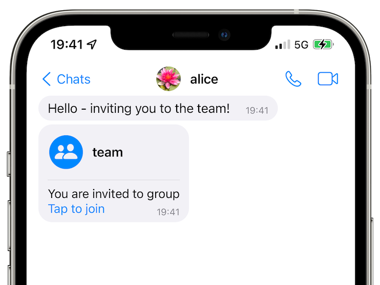
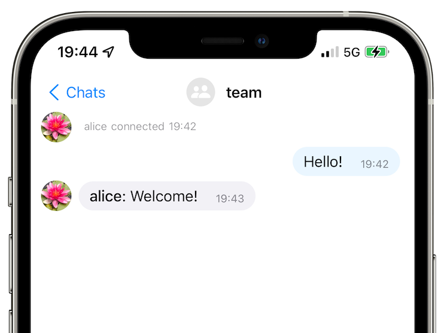

Published: Jul 23, 2022
While SMP protocol is focussed on protecting application-level meta-data by using pairwise connection identifiers instead of user identifiers (that are used by all other messaging platforms), there are scenarios when it is important for the users to protect their IP addresses from the servers - quite a few users have been somewhat disappointed that we didn't add it earlier.
This release of terminal app supports accessing the servers via Tor, but the servers themselves are still available on their usual addresses. We are planning to add .onion addresses (v3 hidden service) to all messaging servers we provide, and the users who self-host the servers will also be able to have dual servers addresses - so that one party in the conversation can access the servers via .onion address without necessarily requiring that the other party uses Tor as well.
To access SimpleX servers via Tor you need to install Tor proxy and run simplex-chat with -x option. See terminal app docs for more information.
As this is a beta release, to install it you need to use this command:
curl -o- https://raw.githubusercontent.com/simplex-chat/simplex-chat/stable/install.sh | sh -s -- v3.1.0-beta.0
 
Groups have been supported by SimpleX Chat core for a very long time, but there was no user interface in the mobile apps to use them - users had to use chat console to create groups, add members, and accept invitations.
This release allows accepting the invitations to join groups via mobile apps UI, making it much easier to create groups - only one user (a group owner) needs to use chat console, while all other groups members just need to tap a button in the UI to join or leave the group. Full group UI is coming in v3.1 in 1-2 weeks, but you can already start using groups today by installing beta-versions of mobile apps via TestFlight, Google PlayStore Beta and APK download.
To manage groups via terminal app or via chat console in the mobile apps you have to use these commands:
/g <group_name> [<description>]/a <group_name> <contact_name> [owner/admin/member]/rm <group_name> <contact_name>Accepting group invitations, leaving and deleting groups no longer requires using console commands.
To reduce battery and traffic usage this release updated SMP protocol to allow batching multiple server commands (up to 90!) into one traffic block – provided both the server and the client are upgraded. It means that if you have 90 contacts (or group members) on one server, to subscribe to all messaging queues you now need to send only one 16kb block instead of ~1.5Mb of traffic (90 blocks). It also hides how many contacts you have from any attackers who observe your network.
You might notice that sending commands to multiple queues in one block would allow the server to correlate that all these queues belong to the same user, even though the current server implementation we use does not do it. But even without batching, as the commands are sent via the same TCP connection, this correlation was already possible, so compared with the previous version it has no downsides.
To mitigate the risk of servers correlating your messaging queues we will soon add an option to access each queue via a separate TCP connection, which will have to be used together with access via Tor (as otherwise the servers would still see the same IP address). While it will increase battery and traffic consumption, it will also provide the highest level of privacy.
When we released SimpleX Chat v3 two weeks ago many users wanted to host messaging servers in docker containers. So, we are now offering two versions of docker configurations:
Let us know how it works for you!
We are building a new platform for distributed Internet applications where privacy of the messages and the network matter. SimpleX Chat is our first application, a messaging application built on the SimpleX platform.
To protect identities of users and their connections, instead of user identifiers visible to the servers and/or the network (that are used by all other messaging platforms), SimpleX Chat uses pairwise identifiers of connections between the users – there are two queues in each connection, each queue having 2 different identifiers to send and to receive the messages. It increases the number of used identifiers to the square of the number of users, making it more difficult (or impossible) to determine who is talking to whom. I wrote previously why it is bad for the users' privacy to have any identifiers, even random numbers, associated with their profiles.
I wrote about it in v2 release announcement and you can get more information about SimpleX platform objectives and technical design in the whitepaper.
SimpleX design follows "defence in depth" security principles having multiple overlapping defensive mechanisms to protect users privacy and security:
What we plan to add soon to further improve privacy and security:
SimpleX Chat README page has more details about it.
I will get straight to the point: I ask you to support SimpleX Chat with donations.
We are prioritizing users privacy and security - it would be impossible without your support we were lucky to have so far.
We are planning a 3rd party security audit for the app, and it would hugely help us if some part of this $20000+ expense could be covered with donations.
Our pledge to our users is that SimpleX protocols are and will remain open, and in public domain, - so anybody can build the future implementations for the clients and the servers. We are building SimpleX platform based on the same principles as email and web, but much more private and secure.
If you are already using SimpleX Chat, or plan to use it in the future when it has more features, please consider making a donation - it will help us to raise more funds. Donating any amount, even the price of the cup of coffee, would make a huge difference for us.
It is possible to donate via GitHub, which is commission-free for us, or via OpenCollective, that also accepts donations in crypto-currencies, but charges a commission.
Thank you,
Evgeny
SimpleX Chat founder